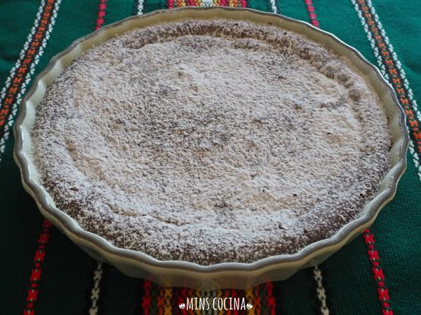

<!DOCTYPE html>
<html>
<head lang="en">
<meta name="viewport" content="width=device-width, user-scalable=no"/>
    <title>Pasteles</title>
<link rel="stylesheet" type="text/css" href="Estilos.CSS">
    <body>
    <div class="cabecera">
        <center></center>
    </div>
    </body>
    
    
     <body background="25120819-cerrar-un-fondo-de-coloridos-dulces-de-caramelos-de-azucar.jpg"> 
     </body>
    <body><a href="espanol.html"></a></body>
    <form>
    <div class="contenido">
         <center><h1><font face="Comic Sans MS,arial,verdana"size=5>Pastel de naranja</font></h1></center>
          <center><a href="/"></a></center>
         <center><h1><font face="Comic Sans MS,arial,verdana"size=5>Ingredientes</font></h1></center>
         <center><h1><font face="Comic Sans MS,arial,verdana"size=4> 500 mililitros de zumo de naranja,  400 mililitros de nata para montar (2 tazas),  350 gramos de leche condensada,  10 hojas de gelatina,  1 bote de caramelo líquido,  1 unidad de naranja o mandarina para decorar.</font></h1></center>
        
         <center><h1><font face="Comic Sans MS,arial,verdana"size=5>Preparación</font></h1></center>
        <center><h1><font face="Comic Sans MS,arial,verdana"size=4>Preparamos los ingredientes.</font></h1></center>
        <center><h1><font face="Comic Sans MS,arial,verdana"size=4>Ponemos las hojas de gelatina en un recipiente con agua durante 5 minutos o el tiempo que mande el fabricante.</font></h1></center>
        <center><h1><font face="Comic Sans MS,arial,verdana"size=4>Exprimir las naranjas hasta obtener los 500 ml de zumo.</font></h1></center>
        <center><h1><font face="Comic Sans MS,arial,verdana"size=4>En una olla o cazo pequeño ponemos el zumo, la nata y la leche condensada. Lo ponemos a fuego bajo y removemos hasta que esté caliente.</font></h1></center>
        <center><h1><font face="Comic Sans MS,arial,verdana"size=4>Cuando esté caliente la mezcla anterior añadimos las hojas de gelatina perfectamente escurridas y removemos con una lengua pastelera o cuchara de madera hasta que se disuelvan. Retiramos del fuego.</font></h1></center>
        <center><h1><font face="Comic Sans MS,arial,verdana"size=4>En un molde donde queramos hacer la tarta de naranja y gelatina ponemos el caramelo líquido repartido uniformemente.</font></h1></center>
        <center><h1><font face="Comic Sans MS,arial,verdana"size=4>Incorporamos la crema de la tarta de naranja sin horno y la metemos a la nevera un mínimo de 5-6 horas para que se cuaje bien, o incluso mejor de un día para otro.</font></h1></center>
        <center><h1><font face="Comic Sans MS,arial,verdana"size=4>A la hora de servir, ponemos la torta de naranja sin horno en una fuente y la acompañamos con una naranja o una mandarina por encima por ejemplo.</font></h1></center>
        <center><h1><font face="Comic Sans MS,arial,verdana"size=4>Y ya tenemos listo el pastel de naranja sin horno para servir cuando gustéis. </font></h1></center>
    </div>
    
     <div class="contenido">
         <center><h1><font face="Comic Sans MS,arial,verdana"size=5>Pastel de chocolate y nueces sin harina</font></h1></center>
         <center><a href="/"></a></center>
        <center><h1><font face="Comic Sans MS,arial,verdana"size=5>Ingredientes</font></h1></center>
        <center><h1><font face="Comic Sans MS,arial,verdana"size=4> 120 gramos de chocolate negro para postres (el mío sin azúcar),  90 gramos de mantequilla,  1 cucharada sopera de colmada de cacao en polvo puro sin azúcar,  85 gramos de azúcar (yo edulcorante equivalente en igual cantidad),  10 gramos de yogur natural (yo lo puse desnatado) (opcional),  20 gramos de harina (yo la puse de avena),  60 gramos de nueces peladas,  ½ cucharada postre de esencia de vainilla,  ¼ cucharada postre de sal,  1 pizca de canela.</font></h1></center>
        <center><h1><font face="Comic Sans MS,arial,verdana"size=4>En un bol derretimos la mantequilla y añadimos el chocolate en trozos y el cacao. Mezclamos hasta que quede homogéneo.</font></h1></center>
        <center><h1><font face="Comic Sans MS,arial,verdana"size=4>Separamos las yemas y las claras de los 3 huevos. En el bol de las yemas, añadimos el azúcar, la vainilla, la sal y la canela, y batimos hasta obtener una mezcla suave y homogénea.</font></h1></center>
        <center><h1><font face="Comic Sans MS,arial,verdana"size=4>Por otro lado, montamos las claras a punto de nieve.</font></h1></center>
        <center><h1><font face="Comic Sans MS,arial,verdana"size=4>Añadimos la mezcla de chocolate y el yogur al bol de las yemas, y batimos.</font></h1></center>
        <center><h1><font face="Comic Sans MS,arial,verdana"size=4>A continuación, añadimos la harina tamizada y las nueces, que previamente habremos molido con un robot de cocina. Mezclamos.</font></h1></center>
        <center><h1><font face="Comic Sans MS,arial,verdana"size=4>Por último, añadimos las claras con cuidado, con movimientos envolventes para no perder el aire del interior.</font></h1></center>
        <center><h1><font face="Comic Sans MS,arial,verdana"size=4>Vertemos la mezcla en un molde engrasado y horneamos el pastel de chocolate y nueces en el horno ya caliente a 180 ºC unos 20 minutos para obtener una consistencia húmeda, que es la que hice yo. Si lo queremos algo más seco, lo dejamos 5 o 10 minutos más.</font></h1></center>
        <center><h1><font face="Comic Sans MS,arial,verdana"size=4>Por último, tras sacar el pastel de nueces y chocolate sin harina del horno y cuando esté completamente frío, antes de servir, espolvoreamos por encima azúcar (o edulcorante glas).</font></h1></center>
</div>
    
    </form>
    </head>
</html>